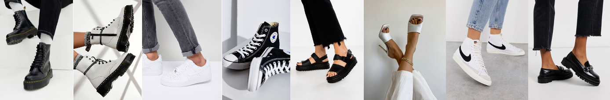

Styling 101
Por: Roberta González
En este sitio te mostraremos ideas de como estilizar diferentes tipos de calzado, en diferentes estilos y paletas de colores.
Selecciona alguna de las opciones que tenemos para ti, hacendo click en el botón.
Botas Dr. Martens
Air Force 1
Converse
Sandalias
Tacones
Nike Blazer Mid 77
Mocasines
